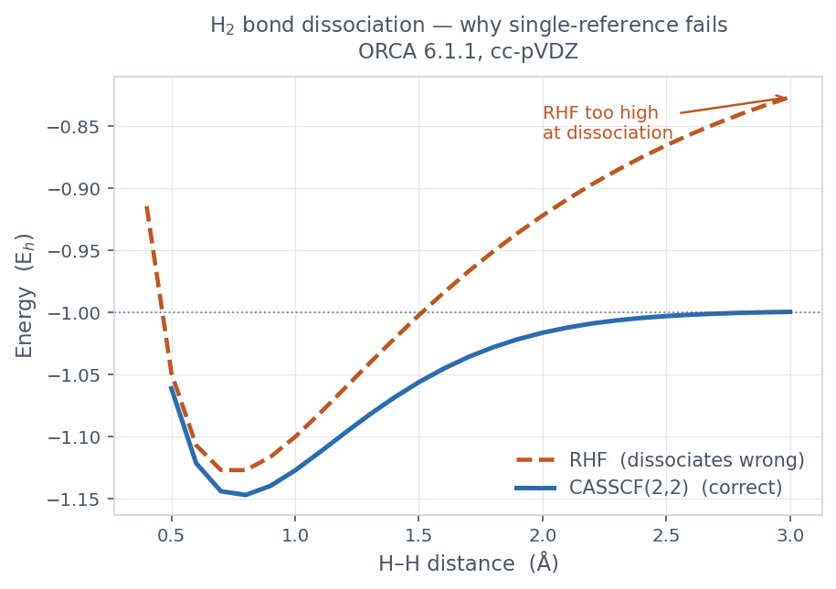
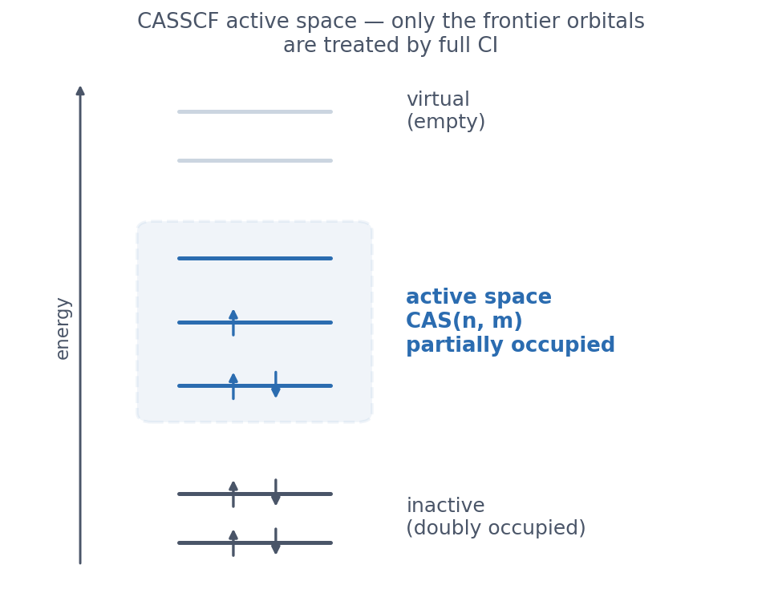

왜 다중참조인가 — 단일참조의 한계
HF, DFT, CCSD(T)는 모두 하나의 슬레이터 행렬식이 지배적이라는 가정 위에 서 있다. 닫힌 껍질 유기 분자나 평범한 라디칼에서는 이 가정이 잘 맞는다. 그런데 두 개 이상의 행렬식이 비슷한 가중치를 가지는 순간 가정 자체가 깨지고, 단일참조 결과는 정성적으로도 틀리기 시작한다. 대표적인 영역이 결합이 끊어지는 도중의 분자, 전이금속·란타나이드의 비공선 자기 상태, 단일항 디라디칼, 원뿔 교차점 부근이다.
가장 깨끗한 예가 H2의 결합 해리다. 아래는 H–H 거리를 0.4 Å에서 3.0 Å까지 훑으며 RHF와 CASSCF(2,2)로 실제 계산한 곡선이다(ORCA 6.1.1, cc-pVDZ).

평형 부근에서는 둘 다 멀쩡하지만, 결합을 끊어 가면 RHF가 위로 발산한다 (3.0 Å에서 −0.826 Eh). 닫힌 껍질 RHF는 두 전자를 σ 결합 궤도에 함께 묶어 두기 때문에, 중성 H 원자 둘로 균일하게 갈라서지 못하고 이온항이 강제로 섞인다. CASSCF는 σ*2 배치를 파동함수에 함께 넣어, 해리 극한에서 H 원자 둘(−1.0 Eh)로 올바르게 떨어진다. 이 σ2와 σ*2 두 배치를 동시에 다루는 것이 다중참조의 핵심이다.
활성 공간 CAS(n, m)
CASSCF는 활성 공간(active space) 안에서 가능한 모든 전자 배치를 풀어 준다.
CAS(n, m)은 전자 n개를 궤도 m개에 가능한 모든 방식으로 채운
full-CI를 뜻한다. 활성 궤도는 “화학적으로 중요한”, 즉 다중참조 성격이 사는 프론티어 근처 궤도를 고른다.
H2면 σ·σ* 한 쌍 → CAS(2,2), 전이금속이면 금속 d(또는 f) 궤도 전부 + 핵심 ligand 궤도가 출발점이다.

결과는 활성 공간을 어떻게 잡느냐에 결정적으로 좌우된다. 너무 작으면 부정확하고, 너무 크면 비용이 폭발한다 (CAS의 차원은 (n, m)에 대해 거의 계승적으로 커져, 정통 CASSCF는 활성 궤도 ~14개가 현실적 상한이다). 처음이라면 화학적 직관으로 잡은 뒤, 활성 전자·궤도를 조금씩 늘려 결과가 수렴하는지 보는 것이 정석이다. 자연궤도 점유수(아래)가 좋은 길잡이가 된다.
첫 CASSCF — H2(2,2)
위 곡선에 쓴 CASSCF 입력이다. 다중참조 성격이 또렷하도록 결합을 1.5 Å로 늘린 지점을 쓴다.
실제 실행 파일은 examples/05-casscf-h2/에 있다.
! CASSCF cc-pVDZ TightSCF
%casscf
nel 2 # 활성 전자 수
norb 2 # 활성 궤도 수 (σ, σ*)
mult 1 # 다중도 (싱글릿)
nroots 1 # 풀 상태 수
end
* xyz 0 1
H 0.0 0.0 0.0
H 0.0 0.0 1.50 # 늘어난 결합 → 다중참조 성격
*출력 읽기 — CI 벡터와 점유수
위 입력의 실제 출력에서 두 줄만 보면 된다. (ORCA 6.1.1 실측)
ROOT 0: E= -1.0561253815 Eh
0.90503 [ 0]: 20
0.09497 [ 2]: 02
N(occ)= 1.81007 0.18993
Final CASSCF energy : -1.056125382 Eh
CI 벡터는 파동함수를 배치들의 합으로 적은 것이다. [0]: 20은
σ에 전자 2개·σ*에 0개인 배치(가중치 0.905), [2]: 02는 둘 다 σ*로 올라간 배치(가중치 0.095)다.
단일참조라면 첫 배치가 ~100%여야 하는데, 두 번째 배치가 9.5%나 끼어 있는 것 —
이게 다중참조 성격이다. 결합을 더 늘리면 두 가중치는 50:50(완전한 디라디칼)로 다가간다.
N(occ)는 자연궤도 점유수다. σ는 1.81, σ*는 0.19 — 단일참조의 2.00 / 0.00에서 벗어나 있다. 이 정수에서의 이탈이 활성 공간 진단의 핵심이다. 경험칙으로 점유수가 대략 0.1~1.9 사이인 궤도는 활성 공간에 넣어야 할 후보다.
여러 상태 동시에 — state-averaging
들뜬 상태를 보거나, 전이금속·란타나이드처럼 여러 상태가 거의 겹쳐 있을 때는 한 상태에만
궤도를 맞추면 편향이 생긴다. state-averaged CASSCF는 여러 root에 대해 궤도를
평균해, 어느 한 상태도 특별 대우하지 않는 공통 궤도 집합을 만든다. nroots를 늘리고
필요하면 다중도별로 블록을 나눈다.
%casscf
nel 6
norb 5
mult 3, 1 # 삼중항·싱글릿 블록
nroots 5, 5 # 각 블록에서 5개 root를 평균
end동적 상관 — NEVPT2
CASSCF는 정적 상관(near-degeneracy)은 잡지만 나머지 동적 상관은 놓친다.
그 위에 섭동론으로 동적 상관을 얹는 표준이 NEVPT2다. CASPT2와 달리
intruder-state 문제가 없어 견고하다. %casscf 블록에 PTMethod 한 줄을 더한다.
%casscf
nel 2
norb 2
mult 1
nroots 1
PTMethod sc_nevpt2 # strongly-contracted NEVPT2
end
sc_nevpt2(strongly contracted)가 빠르고 견고하다. 더 정확히 가려면
fic_nevpt2(fully internally contracted)로 옮긴다.
스핀-궤도 결합과 자기 특성
무거운 원소(4d·5d 전이금속, 4f 란타나이드)에서는 스핀-궤도 결합(SOC)이 상태를 갈라
자기 비등방성을 결정한다. rel 블록의 DoSOC true가 2차 SOC를 QDPT로 처리하고,
SINGLE_ANISO가 의사스핀 Hamiltonian(g-tensor, 영자기장 갈라짐)을 자동으로 fit한다 —
단일분자 자석(SMM) 분석의 표준 도구다. 아래는 Dy(III) 단일 이온을 CAS(9,7)로 다루는 입력이다.
# Dy(III) 4f9 단일 이온 — CASSCF(9,7) + NEVPT2 + SOC + 비등방성
! CASSCF def2-SVP DKH2 RIJCOSX def2/J TightSCF
%casscf
nel 9 # Dy 4f9
norb 7 # 7개 4f 궤도
mult 6, 4, 2 # 6·4·2중항
nroots 21, 224, 490 # Russell-Saunders 항
PTMethod sc_nevpt2
rel
DoSOC true # 2차 SOC (QDPT)
end
SINGLE_ANISO true # 의사스핀 Hamiltonian fit
end
* xyz 3 6
Dy 0.000 0.000 0.000
*
이 페이지의 H2 예제는 실제 실행 결과지만, Dy(III) 같은 무거운 계는
제대로 된 SARC 기저집합·큰 활성 공간·긴 계산이 필요해 여기서 직접 돌리지 않았다.
아래 SINGLE_ANISO 출력의 값(gz 등)은 일반적인 Ising-limit Dy(III)
범위에서 가져온 예시값이며, 실제 착물에서는 다른 숫자가 나온다.
g-FACTORS OF THE LOWEST DOUBLET:
gx = 0.03
gy = 0.05
gz = 19.6 <-- 큰 비등방성 → Ising-limit, SMM 후보
gz가 매우 크고 gx, gy가 0에 가까우면 “Ising-limit 비등방성”으로,
SMM의 1차 진단이다. 그 다음은 POLY_ANISO로 여러 금속 중심 사이의 교환 파라미터
J를 fit해 다핵 거동을 모사한다(매뉴얼 §9.27).
큰 계의 요령 — 금속·리간드 조각 병합
큰 전이금속 착물을 통째로 CASSCF에 넣으면 SCF가 잘 수렴하지 않고 활성 공간 고르기도 어렵다. 이때 쓰는 전략이 조각(fragment) 분리 후 병합이다. 금속 중심과 리간드 껍질을 따로 계산해 각자의 분자 궤도를 먼저 얻고, 두 조각의 궤도를 합쳐 전체 계의 초기 추정(guess)으로 넣는다. 그러면 금속 d/f 궤도가 깨끗하게 분리된 상태에서 활성 공간을 잡을 수 있다.
ORCA에는 이 병합을 전담하는 유틸리티 orca_mergefrag가 들어 있다. 인자 없이
실행하면 사용법을 직접 알려 준다.
orca_mergefrag FragmentA.gbw FragmentB.gbw Supermolecule.gbw절차 — 고스핀 [Mn(H2O)]2+
Mn2+는 d5 고스핀(육중항)이라 다섯 d 궤도가 모두 홑전자로 차는, 조각 병합의 교과서적 사례다. 금속 자리와 물 분자를 각각 조각으로 계산한다.
① 금속 조각 fragMn.inp
! UHF def2-SVP
* xyz 2 6
Mn 0.0 0.0 0.0
*② 리간드 조각 fragH2O.inp — 초분자에서의 제 위치 그대로, 같은 기저로
! UHF def2-SVP # 금속을 UHF로 풀면 리간드도 UHF로 (HFTyp 일치)
* xyz 0 1
O 2.10 0.0 0.0
H 2.65 0.76 0.0
H 2.65 -0.76 0.0
*③ 병합 — 각 조각을 돌려 .gbw를 얻은 뒤
orca_mergefrag fragMn.gbw fragH2O.gbw superMn.gbw병합 출력(실제 실행)에서 원자 수·기저 차원·전자 수가 모두 더해 맞는지 확인한다.
NAtoms(A) = 1 NAtoms(B) = 3 NAtoms(C) = 4
Dimension(A) = 31 Dimension(B) = 24 Dimension(C) = 55 <- 31+24=55
NEl(A) = 23 NEl(B) = 10 NEl(C) = 33 <- 23+10=33
Merging orbitals ... done
Merging geometries ... done
Merging basis sets ... done④ 초분자가 병합 guess를 읽어 CASSCF — 조각 A(Mn)를 좌표 맨 앞에 둔다
! CASSCF def2-SVP MOREAD
%moinp "superMn.gbw"
%casscf
nel 5
norb 5
mult 6
end
* xyz 2 6
Mn 0.0 0.0 0.0
O 2.10 0.0 0.0
H 2.65 0.76 0.0
H 2.65 -0.76 0.0
*병합 guess는 다섯 Mn 3d 궤도를 그대로 활성 공간에 넣어 준다. 실제로 UHF 단계에서 ⟨S²⟩ = 8.751(육중항 이론값 8.75, 스핀오염 없음), CASSCF 자연 점유수 N(occ) = 1.00 × 5로 d5가 깔끔히 들어온 것을 확인했다.
- 두 조각의 HF 타입이 같아야 한다. 금속을 UHF로 풀면 닫힌 껍질 리간드도
UHF로 풀어야 병합된다. 안 그러면
HFTyp(A) must be HFTyp(B)오류로 멈춘다. - 조각 A 원자를 초분자 좌표 맨 앞에. 병합이 A→B 순으로 궤도·좌표·기저를 이어 붙이므로, 초분자 좌표도 조각 A 원자들을 먼저, 조각 B를 뒤에 같은 순서로 둔다.
- 같은 기저·같은 위치. 두 조각 모두 초분자와 동일한 기저집합으로, 초분자에서의 제 위치에 두고 계산한다.
- 병합 guess가 항상 더 낫지는 않다. raw 병합 궤도는 에너지 정렬이 안 돼 있어
궤도 회전이 발산할 수 있다. 도구가 안내하는 대로 병합 guess로 SCF를 한 번 돌려 궤도를
정렬한 뒤 CASSCF에 넘기고, 그래도 흔들리면
SuperCI_PT같은 강건한 궤도 최적화기를 쓴다. 단순한 계라면 ORCA 기본 guess가 이미 옳은 d-점유로 수렴하므로 (이 예제도 기본 guess로는N(occ)=1.0×5,E=−1225.0207 Eh에 바로 수렴) 병합이 불필요할 수 있다. 병합이 실제로 도움이 되는지는 N(occ)와 에너지를 기본 guess와 비교해 확인한다. 진가를 내는 곳은 기본 guess가 엉뚱한 d-점유나 잘못된 스핀 상태로 빠지는, 크고 비대칭인 착물이다.
대칭 등가인 금속 자리를 닫힌 껍질로 치환하는 것도 함께 쓰는 요령이다. Dy3 삼각 클러스터에서 세 Dy 중 둘을 닫힌 껍질 Lu(III)로 바꾸면 C3 대칭을 활용해 한 자리만 명시적으로 다룰 수 있다.
한계와 다음 — DMRG
정통 CASSCF는 활성 궤도가 12~14개를 넘어가면 CI 차원이 메모리를 넘어선다. 그때부터는
ORCA 6의 DMRG-CASSCF(%casscf actorbs DMRG)가 표준으로,
활성 궤도 30~40개까지 다룬다. 동적 상관을 NEVPT2보다 더 정밀하게 가려면 ! MRCI+Q
(다중참조 CI + Davidson 보정)로 옮겨간다.
이 장은 입문 분량이라 여기까지다. 키워드만 손에 익혀 두면 매뉴얼 §9(CASSCF·NEVPT2)와 §10(MRCI)의 해당 절을 바로 펼쳐 볼 수 있다. CCSD(T) 같은 단일참조 방법으로 돌아가려면 10. DLPNO-CCSD(T)를 참고한다.